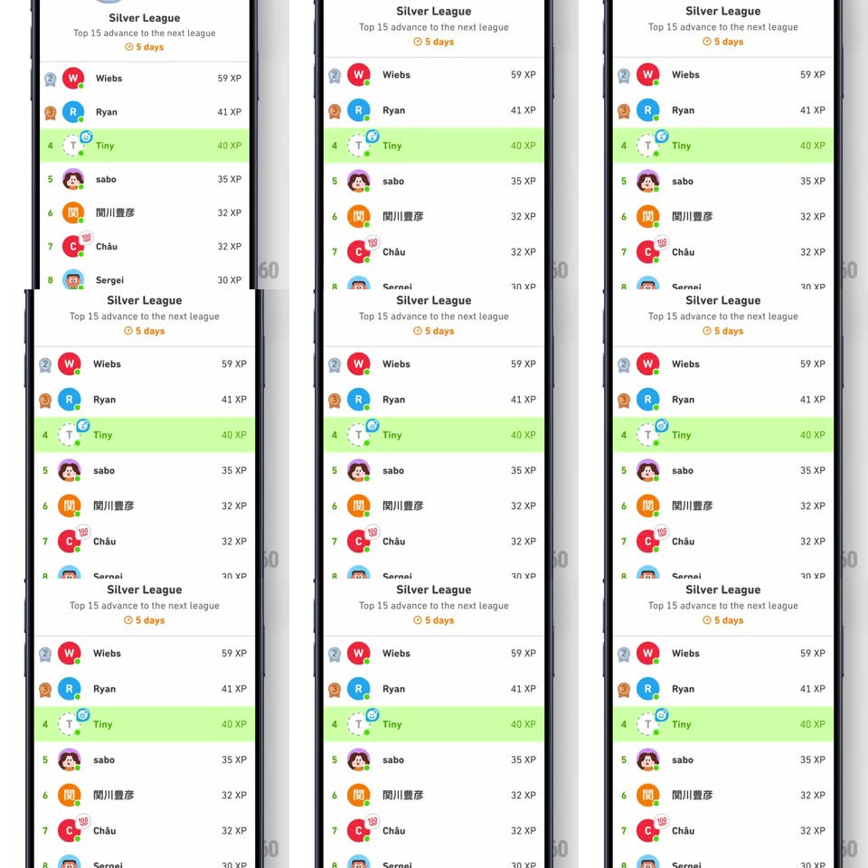

Media
Frame-by-frame

Rebuild this interaction 1:1: Duolingo's mini add-friend nudge - on the Silver League leaderboard, the small add-friend badge on your own row (a person-plus glyph) does a periodic wiggle-and-scale to catch your eye while the rest of the list stays still.

Rebuild this interaction 1:1: Duolingo's mini add-friend nudge - on the Silver League leaderboard, the small add-friend badge on your own row (a person-plus glyph) does a periodic wiggle-and-scale to catch your eye while the rest of the list stays still. ## Integration Integration: stack-agnostic spec - springs given as stiffness/damping, timed motions as duration + curve; map every value to your framework and animation library of choice. ## Scene Silver League leaderboard: rank rows (Wiebs 59 XP, Ryan 41 XP, your green-highlighted row "Tiny" 40 XP at rank 4, then sabo and others), "Top 15 advance to the next league" with a 5-day timer. Your row carries a small circular add-friend badge at its right edge. ## Motion spec Pattern: idle attention nudge on a badge. - The badge idles for ~3s, then performs a wiggle: rotate +/-12deg (3 cycles, 500ms) with a scale pulse (1 -> 1.25 -> 1, spring ~300/16). - The wiggle repeats every ~4s indefinitely until tapped. - On tap, the badge pops (scale 1 -> 1.4 -> 0.9 -> 1, 300ms) and opens the add-friend flow. - Nothing else on the leaderboard animates - the nudge owns all motion. ## Calibration - The badge is small (~28px); the wiggle must be readable at that size - favor rotation over translation. - Green highlight row + green badge: the nudge stays on-brand. ## Reduced motion The badge pulses opacity (0.6 -> 1, 1.5s loop) instead of wiggling. ## Don't miss - The nudge lives on the user's own row, not a banner - it is attached to identity. - The wiggle is periodic, not constant - rest between bursts keeps it from becoming noise.